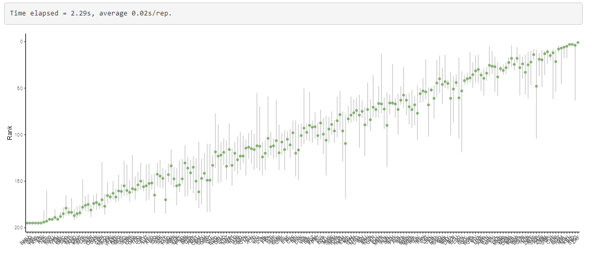
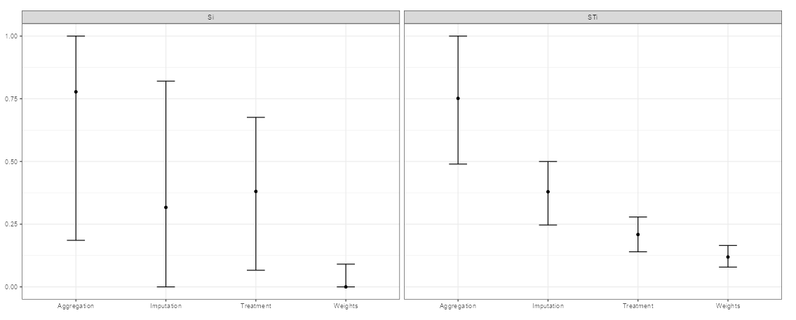

17 Sensitivity analysis
17.1 Introduction
Sensitivity and uncertainty analysis involve analysing the effects of uncertainties on the results of the composite indicator.
Sensitivity analysis (SA) is however often confused with uncertainty analysis. Uncertainty analysis involves estimating the uncertainty in the outputs of a system (here, the scores and ranks of the composite indicator), given the uncertainties in the inputs (here, methodological decisions, weights, etc.). The results of an uncertainty include for example confidence intervals over the ranks, median ranks, and so on.
Sensitivity analysis is an extra step after uncertainty analysis, and estimates which of the input uncertainties are driving the output uncertainty, and by how much. A rule of thumb, known as the Pareto Principle (or the 80/20 Rule) suggests that often, only a small proportion of the input uncertainties are causing the majority of the output uncertainty. Sensitivity analysis allows us to find which input uncertainties are significant (and therefore perhaps worthy of extra attention), and which are not important.
In reality, sensitivity analysis and uncertainty analysis can be performed simultaneously. However in both cases, the main technique is to use Monte Carlo methods. This essentially involves re-calculating the composite indicator many times, each time randomly varying the uncertain variables (assumptions, parameters), in order to estimate the output distributions.
The app implements a flexible variance-based global sensitivity analysis approach, which allows almost any assumption to be varied, as long as the distribution of alternative values can be described. Variance-based “sensitivity indices” are estimated using a Monte Carlo design (running the composite indicator many times with a particular combination of input values). This follows the methodology described in this paper.
17.2 Usage
The sensitivity analysis tab implements a global sensitivity analysis as discussed above, giving the user the flexibility to choose which assumptions to treat as uncertain, but with fixed alternatives.
17.2.1 Specification
The side panel is where you can specify the basic parameters of the sensitivity analysis. There are four possible assumptions that can be checked:
- Whether to impute missing data or not
- Whether to treat outliers or not
- The choice of aggregation method
- The values of the weights
The first two assumptions will be available to select only if you ran those operations in the data operations tabs. In that case:
- If you select the imputation box, the SA will include switching between your selected imputation method (in the imputation tab) and using no imputation.
- If you select the outlier treatment box, the SA will include switching between outlier treatment or no outlier treatment.
The aggregation method and weights will always be available to select since these are required to build the composite indicator. For these assumptions:
- Selecting the Aggregation method box will include switching between the arithmetic and geometric mean in the SA.
- Selecting the Perturb weights box will test the effect of applying noise to the weights according to the percentage specified in the slider below.
The noise applied to the weights is uniformly distributed as +/-X%, where X is the value selected in the slider. This noise is applied as follows:
- For indexes with only two levels it is applied to the indicator level
- For indexes with more than two levels it is applied to all levels above the indicator level
Since sensitivity analysis is a complex topic, these choices are hard-wired into the app for the moment. However, much more flexibility can be achieved by running the sensitivity analysis in R using the COINr package (upon which this app is built). Within the app, the intention is to offer a user-friendly interface which necessarily hides some of the complexity.
In any case, to run the sensitivity analysis you must select which assumptions to vary. Then specify the number of replications in the Monte Carlo analysis - here, more leads to a more accurate result but will also take longer. Finally, click “Run” to run the analysis.
You may receive an error message if you have tried to include aggregation in the sensitivity analysis, and have specified normalisation parameters that lead to zero or negative indicator scores. This is incompatible because the sensitivity analysis will include replications with the geometric mean, which cannot accept zero or negative values. To rectify, either remove the aggregation method from your sensitivity analysis, or change the normalisation method/parameters to result in only positive values.
17.2.2 Results
The sensitivity analysis will take some seconds to run, or longer, depending on the number of replications, the complexity of your composite indicator, and the speed of the computer/server running the app. The progress is reported in the progress text box. On completion, a figure should be returned like this:

This figure plots the ranks of the composite indicator with confidence intervals. The ordering on the x-axis is the “nominal rank”, i.e. the rank without any uncertainty applied. The green dots represent the median ranks observed during the sensitivity analysis - clearly although these roughly correspond to the nominal ranks there are some differences. Finally, the grey vertical lines represent the 90% rank confidence intervals.
Overall, this plot shows to what extent the ranking is robust to uncertainties. Where grey lines overlap, this means there is some uncertainty about the relative ranking.
Next, if more than one assumption was selected, the sensitivity analysis plot will be visible:

This plot shows the relative contribution of each uncertainty selected, to the uncertainty in the rankings. More specifically, it shows the sensitivity indices of each assumption, with bootstrapped confidence intervals. To interpret this, look at the plot on the right side which shows the total sensitivity indices. Each vertical bar represents the estimated range of the sensitivity indices, with the dot being the mean. In the example, the Weights bar is the lowest and has fairly narrow confidence intervals, meaning that the results are relatively insensitive to this assumption. In short, within the range specified for the weights, the impact is relatively small. At the other end, the choice of aggregation shows the highest sensitivity - this means it is the most important assumption, of those tested.
The question then arises: what can be done about the uncertainty? The uncertainty in these results stems from the fact that we are not sure which aggregation method is the most suitable, we are not sure the precise values of weights to use, and so on. In some (or many) cases, these uncertainties are simply a fact resulting from the subjective nature of composite indicators, and modelling in general. However, we could attempt to reduce the uncertainty by studying the problem more closely.
For example, it is well-known that that in the arithmetic mean, high values of one indicator compensate for low values of another, whereas in the geometric mean the compensation is less. It can be worth examining the concept of your index very carefully to understand whether compensation between indicators is desirable or not. If the choice is clear one way or another, this effectively removes the uncertainty, and the aggregation method can be fixed and removed from the uncertainty analysis.
From the analysis above we might also conclude that:
- Weights have relatively little impact, therefore there may not be much value in investing further research in weighting (for example, in an expert survey to elicit weights).
- Outlier treatment also matters relatively little. Potentially one could exclude this step without much impact on the results, to simplify the index for the purposes of communication.
- The imputation of missing data does seem to matter. It may be worth investing more time in this - for example to see whether more data can be collected, or trying more sophisticated imputation approaches (e.g. outside of the app).
17.3 Summary
In summary, the sensitivity and uncertainty analyses will:
- Quantify the overall uncertainty in ranks
- Quantify how much of the uncertainty in results is caused by each uncertain assumption
It may also point to ways to reduce uncertainty, but you also have to accept that some uncertainty is inevitable. Importantly, the sensitivity and uncertainty analyses do not account for all uncertainties. For example, there will be additional uncertainties due to missing indicators, in the definition of the conceptual framework and so on.